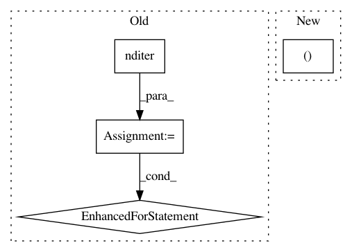

48a54c32a55896620b0523d5a3a68b1826f957cc,art/attacks/virtual_adversarial.py,VirtualAdversarialMethod,generate,#VirtualAdversarialMethod#Any#,38
Before Change
kl_div1 = entropy(np.transpose(preds[batch_index_1:batch_index_2]), np.transpose(preds_new))
d_new = np.zeros_like(d)
array_iter = np.nditer(d, op_flags=["readwrite"], flags=["multi_index"])
for x in array_iter:
x[...] += self.finite_diff
preds_new = self.classifier.predict((val + d)[None, ...], logits=False)
kl_div2 = entropy(preds[ind], preds_new[0])
d_new[array_iter.multi_index] = (kl_div2 - kl_div1) / (self.finite_diff + tol)
x[...] -= self.finite_diff
d = d_new
// Apply perturbation and clip
val = np.clip(val + self.eps * self._normalize(d), clip_min, clip_max)
After Change
preds_new = self.classifier.predict(batch + d, logits=False)
kl_div2 = entropy(np.transpose(preds[batch_index_1:batch_index_2]), np.transpose(preds_new))
d_new[:, w, h, c] = (kl_div2 - kl_div1) / (self.finite_diff + tol)
d[:, w, h, c] -= self.finite_diff
d = d_new
// Apply perturbation and clip
In pattern: SUPERPATTERN
Frequency: 3
Non-data size: 4
Instances
Project Name: IBM/adversarial-robustness-toolbox
Commit Name: 48a54c32a55896620b0523d5a3a68b1826f957cc
Time: 2019-01-14
Author: M.N.Tran@ibm.com
File Name: art/attacks/virtual_adversarial.py
Class Name: VirtualAdversarialMethod
Method Name: generate
Project Name: data61/python-paillier
Commit Name: 96416b889c76f3b6d15af0e3dfd0d4cb2b8b2d23
Time: 2017-06-15
Author: giorgio.patrini@anu.edu.au
File Name: examples/paillier_logistic_regression.py
Class Name: Alice
Method Name: encrypt_weights
Project Name: data61/python-paillier
Commit Name: dedd103ad11ceff6096d48e0ae74a83f2e6f038f
Time: 2017-06-14
Author: giorgio.patrini@anu.edu.au
File Name: examples/paillier_logistic_regression.py
Class Name:
Method Name: